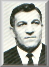

Use CTRL+F or GOOGLE from the index page for a quick search of this page!!!
MEMORIALS OF SARANAC LAKERS AND AREA CEMETERY SEARCH
UPDATED 3/27/2010
YOU CAN NOW ALSO SEARCH LOCAL CEMETERIES HERE.
PINE RIDGE CEMETERY
ST BERNARDS CEMETERY
ST JOHN'S IN THE WILDERNESS (PAUL SMITH'S)
BASIN CEMETERY (Franklin Falls)
COREYS CEMETERY
HARRIETSTOWN CEMETERY
MOUNTAIN VIEW CEMETERY (BRIGHTON)
ST JOHN IN THE WILDERNESS (LAKE CLEAR)
UNION CEMETERY (NEAR VERMONTVILLE)
ST PAUL'S CEMETERY (NEAR BLOOMINGDALE)
FRANKLIN FALLS CEMETERY
COMPLETE LISTING OF NORTHERN NY CEMETERIES
CHUBB CEMETERY ON THE BLOOMINGDALE RD
I want to thank Thelma and Frank Buck for compiling this Chubb Cemetery list in 1976 and I'm especially grateful to Thelma for sharing her very interesting memories of that area going back to 1928. Read them here!
WNBZ OBITS
 TRIBUTE PAGEEmail me a few words of tribute to your loved one and I'll post it on the TRIBUTES page. Send along a pic, too if you would like.
TRIBUTE PAGEEmail me a few words of tribute to your loved one and I'll post it on the TRIBUTES page. Send along a pic, too if you would like.
TRIBUTES TO BOB GRIFFIN
MEMORIAL SUBMISSIONS
2011
Gerald "Jerry" Shore 74 -- 6/25/1937 --- 7/12/11
Dana Hoffman 62 3/10/1949 --- 7/10/11
John "Whitey" Keese 78 -- 7/9/11
Paul A Harvey 51 -- 3/16/1960 --- 7/3/11
Steve Thomas 59 -- 10/30/1951 --- 6/28/11
Alice Munn Wallace 99 -- 10/11/1912 --- 6/23/11
George Garrant 84 -- 2/22/27 --- 5/25/11
Eddie Lewis 77 -- 11/12/1933 --- 5/25/11
Tony Brooks 57 -- 12/7/1953 --- 5/18/11
Fraser John Sturgeon 85 -- 5/16/1925 --- 5/13/11
Jan Kinkead Lynch 70 -- 10/2/1940 --- 5/2/11
A. James "Jim" Allott 75 -- 10/8/1935 --- 5/11/11
Ronald Mark Landfried 58 -- 10/23/1952 --- 2011
Donald James Hough 56 -- 11/14/1954 --- 5/27/11
Kendall N. Bickford 84 -- 12/10/1926 --- 5/7/11
Kristin G. Greene 71 -- 5/4/11
Jennifer L. Muncil 38 -- 11/8/1972 --- 5/2/11
Thomas M. Callahan 74 -- 4/28/11
Elzida Loretta Wilkins 91 -- 4/24/11
Gary Sklaryk 55 -- 6/11/1955 --- 4/10/11
Frinda N. Smith 73 -- 9/30/1937 --- 4/14/11
Monroe F. Gladd 74 -- 4/25/36 --- 4/10/11
Morris D. Cagwin 76 -- 4/9/11
Manley "John" M. Corson Jr. 84 -- 1/4/1927 --- 4/8/11
Richard J. Strack 61 -- 10/22/1949 --- 4/8/11
Margaret A. LaFleur 74 -- 12/2/1936 --- 4/4/11
Jane Rovito 74 -- 5/13/1936 --- 4/1/11
Geraldine M. Goff 84 6/28/1926 --- 3/28/11
Franklin "Frank" R. Miller 78 --1932 --- 3/24/11
Janet Parker Decker 89 -- 10/19/1921 --- 3/22/11
Emma Montalbine 89 -- 2/2/1922 --- 3/13/11
Mildred Li Distin -- 2/3/11
Beverly Lalande -- 5/26/1937 --- ?/?/11---
Robert S. McKillip 79 -- 3/15/1932 --- 3/5/11
Nancy Nelson Miner Pandolfo 81 -- 11/8/1929 --- 3/12/11
Audrey Willett 82 -- 11/9/1928 --- 3/11/11
Donald E. Duffy 40 -- 6/23/1970 --- 2/16/11
Jeanne O. Fisher 84 -- 3/26/1926 --- 2/22/2011
Elizabeth Ann Morgan 46 -- 1/9/1965 --- 2/16/2011
Donald E. Duffy 40 -- 6/23/1970 --- 2/16/2011
Col. Harold F. Bentz Jr. 86 -- 2/15/2011
Bernard "Bernie" F. Bova 68 -- 7/10/1942 --- 2/15/2011
Joan R. Hough 79 -- 2/5/1932 --- 2/15/2011
Robert E. Dewey 80 -- 10/6/1930 --- 2/12/2011
Harriet Jane Stiles Lupino 86 -- 7/16/1924 --- 2/9/2011
Emil Francis Block Jr. 87 -- 8/16/1923 --- 2/3/2011
Phil Wolff 95 -- 10/19/1915 --- 2/3/2011
Florence S. Wenke 83 -- 7/31/1927 --- 2/1/2011
Theola Lamoy 76 -- 5/8/1934 --- 2/1/2011
2010
Jeanne G. Montgomery 94 -- 11/6/1916 --- 12/29/2010
Rita Corinne Moody 86 -- 9/22/1924 --- 12/25/2010
Donald A. Richter, M.D. 99 -- 10/26/1911 --- 12/25/2010
Anita Beatrice (Johnson) Sabol 86 -- 10/4/1924 --- 12/24/2010
Hilda Mae (Martin) Pickreign 92 -- 9/27/1918 --- 12/18/2010
Joyce LaVair 74 -- 9/26/1936 --- 12/18/1936
George H. Carley Jr. 89 -- 10/27/1921 --- 12/14/2010
Valeita Allen 64 -- 5/25/1946 --- 11/29/10
John R "Jack" Edelberg 88 -- 11/ 24/10
Michael Leonard Morgan 71 -- 11/27/1938 --- 11/11/10
Carrie Leigh Bailey 37 -- 4/28/1973 --- 8/25/2010
Jeanne DeMattos 92 -- 1/1/1918 --- 11/16/2010
Bill Gallagher 87 -- 7/25/1923 --- 11/15/2010
Shirley Claremont Oehler 77 -- 2/1/1933 --- 11/11/2010
Helen Munn 79 -- 8/19/1931 --- 11/10/2010
Bruce Carr 59 -- 5/27/1951 --- 11/08/2010
Thomas C Norman 88 -- 11/30/1926 --- 11/7/2010
Howard Wells 70 -- 1/29/1940 --- 11/5/2010
Vincent VanYserloo 84 -- 7/27/1926 --- 10/26/2010
Joseph M. Lynch 72 -- 9/17/1938 --- 9/28/2010
Eleanor Daniels 83 -- 3/8/1928 --- 9/3/2010
Shel Damsky 83 -- 9/1/2010
Barbara J Baldwin 64 -- 9/24/1945 --- 8/31/2010
John Edward Pickreign 97 -- 12/15/1912 --- 6/26/2010
Roy James Snyder 92-- 10/23/1918 --- 6/9/2010
Robert "Bob" Griffin 68--9/7/1942 --- 6/5/2010
Shirley Ann Tanzini McCarthy 85-- 8/5/1924 --- 5/31/2010
Mary Cushman Porier 65--11/3/1944 --- 5/5/2010
Jaye "Zeke" Vandenburgh 86-- 6/14/1923 --- 4/29/2010
Katie Highland Pacelli 75-- 4/17/2010
Hubert Tyler 53 -- 4/22/56 --- 4/15/2010
Walter "Gator" Gowan 57-- 4/10/2010
Mary K Markey 76 -- 4/24/1933 --- 4/3/2010
Carl Lamoy 80 -- 8/6/1929 --- 4/3/2010
Madge Carpenter 59 -- 1/14/1951 --- 3/25/2010
Michael G Gladd 52 -- 4/23/1957 --- 3/23/2010
Mary B Peria 89 -- 10/1/1920 --- 3/23/2010
Dorine S Farrell 82 -- 8/6/1927 --- 3/21/2010
Timothy D Turner 67 --- 3/21/1942 --- 3/16/2010
Ann Umber, 75 -- 9/8/1934 --- 2/22/2010
Bill Allen Sr. 89 -- 5/23/1920 --- 2/21/2010
Chuck Brumley 70 -- 1939 --- 2/20/2010
Kathleen "Kathy" Haig Davis, 57 --- 1952 --- 2/9/2010
Brian E Dukett, 53 -- 2/22/1956 --- 2/1/2010
Marvin C. Begor, 71 -- 6/1/1938 --- 1/31/2010
Bill Donnelly, 66 -- 8/30/1943 --- 1/22/2010
Margaret L. Ayotte Burman Fortune, 96 -- 3/10/1913 --- 1/15/2010
Don Duso, 74 -- 12/26/1931 --- 1/10/10
2009
Whitney J. Marten, 47 -- 8/8/1962 --- 12/25/09
Rita M Johnson Gonyea, 73 -- 5/23/1936 --- 12/19/09
Judith Fialla "Fi" Gamsu, --- 12/17/09
William L LaGasse, 81 -- 1/15/1928 --- 12/18/09
Peggy F Hunt, 89 -- 5/5/1920 --- 12/14/09
Gertrude Callaghan Bickford, 89 -- 1/1/1920 --- 12/21/09
Audrey G. "Audie" Cochran, 86 -- 1/10/1923 --- 12/21/09
James R. Flint, 65 -- 12/25/1943 --- 11/12/09
Benjamin Banker Jr, 89 -- 11/13/09
Kenneth P Garwood, 87 -- 11/3/09
Thomas Austin, 52 -- 1/25/1957 --- 11/1/09
Douglas C Van Weelden, 61 -- 2/7/1948 --- 10/31/09
Sherri Ann Lawrence, 35 -- 10/5/1974 --- 10/29/09
Donna M McCormick, 58 -- 12/25/1950 --- 10/25/09
Myrabell Savarie, 92 -- 6/26/1917 --- 10/10/09
Marie K Mussen, 81 -- 1/12/1928 --- 10/5/09
Kathryn M Downs, 83 -- 2/12/1926 --- 10/2/09
Michael "Mike" Sheridan, 62 --- 9/8/09
Margaret G Logie, 89 -- 7/22/1920 --- 9/1/09
Melanie Darrah Montalto -- 10/15/1948 --- 8/?/09
Margaret (Marjorie) K. McLaughlin, 89 -- 4/22/1920 --- 8/18/09
Beverly C. St. Louis, 80 --- 8/14/09
Ann M. Grant, 81 -- 7/9/1928 --- 8/6/09
William G. Scheefer IV, 36 -- 1/10/1973 --- 7/22/2009
Winifred H. Outcalt, 65 -- 7/30/2009
John C. Knight Jr., 67 -- 7/24/1941 --- 7/17/2009
Gail L. McClatchie Swinyer, 50 -- 2/25/1959 --- 7/16/2009
Gail L. ( McClatchie) Swinyer, 50 -- 2/25/1959 --- 7/16/2009
Elise K. Chapin, 96 -- 6/21/1913 --- 7/14/2009
Robert R. "Mac" Bushey -- 82 --- 1/6/1927 --- 6/29/2009
Isabelle E. Sullivan, 86 -- 2/17/1923 --- 6/28/2009
Peter Venance LeMay III, 79 -- 3/6/2009
Vernon W. Wamsganz, 95 -- 9/23/1913 --- 6/19/2009
Lawrence "Larry" Landry, 26 -- 1/28/1983 --- 6/10/2009
Katherine R. LaMay, 92 -- 3/15/1917 --- 6/15/2009
Marion Ruth Symonds, 88 -- 3/6/1921 --- 6/10/2009
Eleanor K. Munn, 93 -- 8/28/1915 --- 6/10/2009
Nicholas Cole, 55 -- 10/7/1953 --- 6/6/2009
Ralph S. "Babe" Blanchard Sr. 79 -- 1/20/1930 --- 6/5/2009
Betsy (Mullin) Lamy 59 -- 6/6/09
Pam (Passino) Turner 69 -- 6/25/1939---6/4/09
Ken Mulligan 89 -- 6/4/09
Phyllis (Norman) Knobel 86 -- 3/15/1923---5/25/09
Beatrice L. Benware 88 -- 9/15/1920---5/3/09
Winchester H. MacDowell 90 -- 12/29/1918---4/23/09
Robert J. Prevost 73 -- 5/1936---4/20/09
Geraldine M Primeau 92 -- 3/26/1916 --- 3/12/09
Beverly Jean Law 72--6/28/1936---3/3/09
John “Jack” Murphy 84--7/16/1924---2/20/09
Robert J. "Bob" Farmer 73--2/18/09
Karen A. Hurst Donnelly--2/05/09
Robert "Rob" Byno 29--11/19/1979---1/20/09
Marcelline E Hall Fanning 89--6/14/1919---1/18/09
Louise M Bellaire 95--12/28/1913---1/13/09
Joyce Hadynski 73--1/10/1936---1/11/09
2008
Robert E. "Bob" Boon 61--4/26/1947---12/11/08
Joseph W. Keith 83--3/15/1925---12/9/08
Philip A. Darrah 77--4/2/1931---12/5/08
George H. Rankin 81--2/24/1927---11/30/08
Elinor R. Zahn 88--10/14/1920---11/26/08
James Patrick Boyd 66--11/20/08
Carol Farrell 64--6/22/1944---11/19/08
Ray Fadden 98--8/23/1910--11/14/08
Mario "Marty" DeVit 86--11/11/1922--11/13/08
Jon P. LaMay 67--4/11/1941--11/4/08
Richard "Dick" Gladd 74--1934--11/1/08
Mildred R. Keough 94--1/21/1914--10/24/08
Dale E. Garwood 55--1955--10/20/08
Mae Hyrup 106--3/5/1902--10/5/08
Kathy (Meehan)(LeMay) Smart 66--12/4/1946--9/28/08
Terressa L (Corbin) King 90--1/14/1918--9/21/08
Daniel A. Hamm 24--8/18/1984--9/17/08
Barbara Quigley McKillip 76--6/14/1932--9/15/08
Thomas Dwight Strack 61--8/12/1947--9/8/2008
Ruth I. Collins 82--11/2/1925--9/3/08
Richard “Ray” Willette 81--11/14/1926--9/2/08
Lawrence "Larry" Mace 76--11-30-32--08-04-08
Florence V. Collela 85--3/29/1923--7/28/08
Harry Tucker 60--7/4/08
Nelson Shumway 67--8/21/1941--6/28/08
Dorothy Reichhart Meagher 84--12/23/1923---6/8/08
John "Jack" Riley 77--9/21/1930--6/7/08
Susan B. Clement 55--10/7/1952--6/6/08
Clifford "Butch" Allen Jr. 70--11/25/1937--5/13/08
Marietta "Dolly" Cheney 93--2/26/1915--5/11/08
Robert "Bob" Bruso 69--1939--5/2/08
Robert L. "Bob" Carter 79--1929--4/27/08
Margaret B. (McGrain) Duesler 83--7/11/1925--4/27/08
Shirley A. Ohman 66--2/1/1944--4/5/08
Myrtle M. Gowan 79--6/7/1928--4/5/08
Margaret Campion--3/30/08
Larry "Luger" Stringer 54--6/19/1953--3/24/08
Loretta F. Johnson 58--9/3/1949--3/22/08
Larry W. Brink 58--9/28/1949--3/18/08
James H. Dufort 86--5/4/1921--3/18/08
Wendel F. Fuller 85--6/12/1922--3/16/08
Patricia C. Harrigan 80--3/17/1927--3/11/08
Marie D Kennedy--2/2/08
Jacqueline "Jackie" McClatchie 70--2/20/1937--2/2/08
Joyce G. Taylor 77--12/16/1930--1/26/08
Jon Shaw 60--3/4/1947--1/18/08
Randy Delosh 35--9/27/1972--1/16/08
Mary B. LaRose 87--12/30/1920--1/12/08
2007
George "Hooker" Dukett 62--7/20/1945--12/22/07
Scott A. McDuff 30--7/15/1977--12/15/07
Bernadette S. Durett 90--9/27/1915--12/2/07
Melvina A. Salls 97--4/6/1910--11/30/07
Terry R. "Snake" Duso 58--7/21/1949--11/26/07
Beverly M. Berry 84--5/30/1921--11/23/07
Muriel D. "Babs" Anson 84--5/30/1921--11/23/07
Claire (Saumier) Skeels 84--1/17/1923--11/20/07
Barbara (Hubbard) McKillip 69--7/28/1938--11/11/07
Paul William Mace 52--10/30/1955--11/5/07
John R Walsh 85--1922--10/30/07
Bernard Mullen 95--8/31/1912--10/30/07
Timothy Claude Sweet 79--10/31/1927--10/29/07
John M McCormick 59--12/2/1947--10/19/07
Charles "Chuck" Easton 57--10/1/1947--9/11/07
Cynthia "Cindy" McCarthy Sharpe 42--4/6/1965--9/8/07
Elmer Brewster 86 1921--9/8/07
Lois M Pelkey 83 10/16/1923--9/6/07
Shirley Smith Lamas 71 3/15/1936--9/3/07
Ralph R. Morrow 83--11/25/1923--7/31/07
Dorothy (Gladd) Davis 83--4/10/1924--7/3/07
Sarah E. "Sally" Bouvier 72--8/14/1934--7/29/07
Roy H. Kristoffersen 55--11/12/1951--7/27/07
George "Duke" Benz 90--9/6/1917--6/23/07
Helen Pelkey 84--10/22/1922--5/26/07
Bernard R. Tuthill 89--11/16/1917--5/13/07
Joan M. Ormsby 76--8/22/1930--5/15/07
Orville Paye 81--10/11/1925--5/13/07
Mary Ellen (Young) Law 61--5/11//07
Walt Patnode 86--3/27/1921--5/11/07
Armand Amell 81--8/11/1925--5/10/07
Robert F. Patnode 76--6/12/1930--4/27/07
Leona Brooks 94--7/10/1912--4/26/07
Edmund John VanCour 87--10/6/1919--4/11/07
Phyllis Harvey Haegler 73--6/13/1933--4/11/07
Archie Strack 74--6/15/1932--4/11/07
Beverly Brophy 75--8/5/1932--4/5/07
Emma Donaldson 93--2/14/1914--4/4/07
Ruth Clark 79--9/2/1927--3/31/07
Mary Fitzgerald 82--5/30/1924--3/30/07
Heidi Voehringer Allen 67--1940---3/25/07
Charlene Anderson--3/24/07
Mary A. Macey 97--9/8/1910--3/13/07
Sandra L. (Martin) Tanner 59--7/25/1947--3/7/07
Ellen Louise LaMoy Hartson 81--11/30/1925--3/6/07
Flora K. Shene 84--10/6/1922--3/3/07
Mary E Stunzi 91--1/11/1916--2/25/07
Mary A (Sally) Reome 85--2/14/1922--2/21/07
Dr. Clayton M. Steward 95--7/25/1911--2/15/07
George A. LaMay 65--8/28/1941--1/31/07
Edna Irene MacDowell 89--3/17/1917--1/17/07
2006
Beatrice A "Bea" Drutz 85--9/6/1921--12/31/06
Myron "Rube" Skeels 87--4/5/1919--12/25/06
Tyler Leidig 21--3/31/1985--12/23/06
Albert J Dukett 70--1936--12/2006
Edwin Ted Stratford III 74--12/29/1931--12/20/06
Robert D Stehl 58--12/27/1947--12/19/06
William H Tucker 60--11/26/1946--12/19/06
Danny Kaestle 63--1943--12/17/06
Ingleton "Inky" Schenck Jr. 83--12/10/1923--12/15/06
Phyliss W Driscoll 72--8/18/1934--12/13/06
Theresa Brown Bola 78--1/21/1928--12/13/06
Francine Mancusco Collier Jonas 59--8/1/1947--12/12/06
Christian R Sporck 88--10/2/1918--12/4/06
Rebecca (Becky) Sampson Kirk 87--12/2/1919--12/3/06
Edith M. Cole 83--3/26/1923--12/3/06
Robert D. "Bing" Eldrett 69--1937--11/23/06
Wayne Collins 43--4/20/1963--11/19/06
Joyce E. Seney 78--10/15/1928--11/15/06
Howard "Howie" Myatt 66--8/16/1940--11/14/06
Martin T. "Marty" Cole 57--1950--10/26/06
Viola "Vi" Turner Clancy 88--9/7/1918--10/25/06
Bradford "Jay" Connor 62--4/23/1944--10/21/06
Louis L "Louie" Ratelle sr. 70--6/21/1936--10/4/06
Doug E Snickles 58--12/14/1947--9/27/06
John N "Johnny" Garwood 79--8/21/1927--9/24/06
THE VOICE OF THE REDSKINS
The greatest Saranac Lake Redskin Football announcer ever!
Margaret "Margo" M Dukett 58--11/19/1947--9/19/06
Brett M Piro 39--12/15/1966--9/16/06
Doris Landry 83--7/27/1923--9/8/06
Arthur J Higgins 3rd 79--4/28/1927--9/1/06
Alexine F Racette 36--11/3/1969--8/24/06
Shirley (Baker, Bomyea) Barton 71--5/29/1935--8/21/06
Richard P. "Dickie" Moody 44--3/2/1962--8/12/06
Margaret Q. Rice 91--8/7/1914--8/2/06
Benton "Benny" Foster 63--12/1/1942--7/30/06
Dianne E. (Svocak) Theriault 62--8/7/1943--7/20/06
Clarabell E. Finlayson 95--3/9/1911--7/20/06
Marion E Hale 78--5/27/1928--7/17/06
Geraldine R Lamy 77--1/2/1929--7/11/06
GERALDINE'S OBIT PAGE
Helen Jean Kilmer 77--7/15/1928--7/14/06
Donald Jessie 59--9/20/1946--7/11/06
Elenore D Hillman 88--7/5/1918--7/6/06
Robert Fisher 80--9/17/1925--6/30/06
George "Mickey" Blair 70--11/30/1935--6/22/06
James M. Callaghan 45--2/26/1961--6/3/06
J. Sally (Griswold) Tyldesley 78--1/15/1928--5/25/06
Deborah R. Reome 53--11/27/1952--5/23/06
Ethel Grace Pratt 97--3/15/1909--5/23/06
Alfred G. Moody 83--1923--5/21/06
Bernard A. "Bud" Dupree II 69--5/20/06
Doris Moody Cook 82--5/11/1924--5/19/06
Bob Walasky 54--4/5/1952--5/18/06
George Strack 65--1/25/41--5/17/06
Rod Stearns 82--5/19/1923--5/13/06
Patricia C. Sawyer 75--3/18/1931--5/9/06
Henry H. Trotter 55--10/15/1950--5/8/06
Sheila (McTaggart) Archambault 58--8/27/1946--4/27/06
Mary Rose Woodruff 80--10/29/1925--4/26/06
Robert "Bob" Finn 80--10/25/1925--4/25/06
Richard "Dick" Byno 76--6/26/1909--4/23/06
Lillian Blood Jessie 67--1939--4/22/06
Robena M. Moody 86--12/23/1919--4/17/06
Lane Knight 57--1949--4/13/06
Elizabeth A. Kaestle 87--4/8/1919--4/10/06
Blanche E Gilpin 92--12/23/1913--4/4/06
Richard Metz 89--6/3/1916--4/3/06
Martha (Curry) Salls 59--5/6/1947--3/25/06
Robert A Smith 89--6/9/1916--3/20/06
Theresa M. O'Dell 85--12/31/20--3/11/06
Charles R "Charlie" Smith 64--6/6/1941--3/3/06
Michael "Mike" McCarthy 65--5/6/1940--2/27/06
Robert Carr 58--12/11/1948--2/26/06
Lorraine W Garwood 77--3/25/1928--2/25/06
Harriet L Ward --2/20/06
Ernie Stautner 80--5/20/1925--2/16/06

Ruth A. Robinson 81--12/17/1924--2/13/06
Richard Mullen 90--1915--2/9/06
Richard Harold Hugg 78--3/19/1927--1/25/06
Jeannette Conroy Valdez 93--3/25/1912--1/22/06
Donald 'Bunker' Hill 67--6/23/1937--1/21/06
John Umber 64--12/11/1939--1/15/06
2005
Patrick 'Vernon' Romeo 68--9/30/1937--12/29/05
Robert "Bobby" Scollins 56--1949--12/27/05
Lyn (Logie) Strolz 58--1947--12/16/05
Michael J. Clarke 63--12/27/1941--12/16/05
Patrick H. Wind 64--1941--12/10/05
Florence Stephenson 85--6/8/1920--12/4/05
Joseph A. Isabella 66--1939--12/3/05
Gerard G. Miner 69--5/24/1936--11/19/05
Michael J. Adams 52--9/27/1953--11/15/05
E. Ann Cavallo 81--9/28/1924--11/14/05
Harriet McClure 77--8/12/1928--11/14/05
Thomas "Tom" Ward 57--4/14/48 - 11/1/05
Ethel L. Scinto 90--12/21/1914--11/1/05
Tom Ward 57--4/14/1948--11/1/05
Harry "Ed" Duso Jr 80--7/26/1925--10/27/05
Charles Mace Moody 59--7/15/1946--10/31/05
Shirley DeLano Ryan 88--3/19/1917--10/28/05
Raymond R. Ohmann 76--7/2/1929--10/28/05
Raymond Knoble 84--1921--10/26/05
John F. Campion 84--3/16/1921--10/24/05
Ned J. McClatchie 76--10/11/1929--10/24/05
John J. Garvey 78--10/20/05
Margaret "Peg" McLaughlin 79--5/23/1926--10/19/05
Frances R Coughlin 91--7/22/1914--10/11/05
Barbara Lamay Howley 79--7/1/1926--10/8/05
Patricia Johnson Jacobs 74--11/30/30--10/9/05
Ann Marie "Missy" Murphy Tobias 55--7/20/50--9/7/05
Sister Mary Celeste Kelly 83--2/26/1922--10/2/05
Charles S. Reynolds 73--1/31/1932--9/30/05
Don Waters Sr. 75--10/10/1929--9/27/05
Leo Collins 98--2/22/1907--9/24/05
Steven Paul Carpenter 33--3/11/72--9/19/05
Marie Elizabeth Wilson 68--3/5/37--9/18/05
Bertha "Bert" Stringham 95--8/16/1910--9/11/05
Phoebe Whisher 85--7/24/1920--9/11/05
Ruth Svocak 84--9/9/05
Rita Duquette Hadjo 85--7/17/1920--8/30/05
John G. "Jack" Murphy 46--2/26/1959--7/23/05
Dean Dudley 63
Jimmy Morrow 63
Bernard A. Brown 91--6/23/1913--6/9/05
Timothy J. Carris 35--6/1/05
Gerard J. Meagher 89--10/1/1916--6/29/05
Mary Louise Fobare 80--7/31/1924--5/27/05
Edward P. Deissler 66--5/4/1939--5/16/05
Ivy Little Kirkendall 98--(former Ampersand Hotel owner) 4/8/1907--5/4/05
THE BELOVED AND LEGENDARY "MAYOR OF ONCHIOTA"
Hayden "BING" Tormey 82--11/22/1923--5/4/05
Harold R. Trushaw 55--8/5/1949--5/2/05
Michael D."Mike" Duprey 47--8/25/57--4/12/05
William D. "Billy" Gladd 71--8/22/1933-4/11/05
M. Lillian Goetz 84--1/3/1921--4/10/05
Francis R. "Frenchie" D'Aoust 66--4/3/05
Douglas "Dougie" Douquette 59--3/3/1946--3/14/05
Francis Leo Rascoe 66--10/23/38--3/14/05
William "Willie" Murray 59--5/29/1945--3/10/05
Arthur W. Wareham 90--6/26/1914--3/10/05
"We'll always remember his
beautiful smile."
June Stearns 73--3/10/05
Carrol M. Yard 86--12/30/1918--3/7/05
Alvera M. Fortune 88--4/5/1916--3/5/05
Denton "Destry" Lewis 77--2/20/1927--2/19/05
Jack "Jake" Kraus 92--3/19/1912--2/20/05
Norma Allen 90--3/13/1921--2/11/05
Dorothy McCarthy 91--10/12/1913--2/9/05
Richard Chapman LaPan October 1, 1941 - January 7, 2005
Alfina Murray 84--10/28/1915--2/6/05
Loretto W Leonard 92--1913-1/5/05
2001--2004
M. Florence LaFleur 92--9/21/1912--12/31/2004
Brad "Butch" Sageman 53--1/19/1951--12/20/2004
Tim Hennessy 66--9/15/1938--12/18/2004
Joanie Wehs Brush 58--11/30/2004
Helen A. Bishop 85--5/14/1913-11/13/2004
Gary J. Sheffield 68--8/18/1936-11/20/2004
Olive Alma Haase--90-October 22, 2004
Mike Phillips--61-8/25/37-10/31/04
Robert "Boob" Swain--80-3/6/23-10/30/04
Mickey Gardner--6/19/41-7/8/04
James A "Jimmy" Latour--81-8/31/22-6/15/04
Robert E. Ryan-87-5/4/1916-1/21/04
Jack Gillespie, 80 -- 1923 --- 10/3/03
Clara Walter Daniels-1/4/1912-10/8/03
Dolores Kilroy-84-1919-10/14/03
Paul "Bummer" Duprey 5/03 age 49
Dee Dee (Charland) Bedore 11/03
Dr. Alton Bouton 10/8/03
Kevin Bristol 6/03
Alys Burrell 10/1913 -- 2002
Bill Burrell 12/1948 -- 2002
Gary "Peanut" Baker 2/02 age 46
Ethel Marie (Flagg) Forschien---March 7 1941 - July 23 2001
Charles "Cubby" Duprey 2001 age 55
Patrick "Space Plumber" Stratton 7/01 age 47
2000
PATRICK P. AMELL--L CPL--US MARINE CORPS--PURPLE HEART - 50 -- 3/17/1950 --- 6/5/2000
NED "BEAST" BAUER, 52 -- 9/15/1948 --- 12/21/2000
1999
1/3 GERTRUDE L HOGAN(85)
1/1 AUSTIN GOWAN(72)
1/3 HANS VAGEN(81)
1/9 MICHAEL "MIKE" TOBIN(70)
1/10 LEO SAWYER(92)
1/11 AUDREY K WOOD(82)
1/15 CHARLES HARVEY(74)
1/16 ROLLAND MOODY(82)
1/17 MARGARET HALL(96)
1/18 JAMES LEWIS(70)
1/22 HAZEL I TREDO(91)
2/3 WILLIAM PEDRONI(63)
2/6 CATHERINE "KITTY" DEPREY(64)
2/8 DAVID L LeCLAIR(50)
2/4 NICHOLAS "NICK" LOGIE(53)
2/8 HAROLD "CHARLIE" HILL(91)
2/11 NORMA A DARRAH(89)
2/12 ALMA E BAKER(83)
2/16 JOHN F POHL JR(66)
2/17 DARRIN S SWINYER(33)
2/17 KEVIN H FURNESS(43)
2/21 HELEN E ANDERSON(87)
2/27 JOHN"ABE"LABAS(83)
2/13 MARY ANN(BANKER)FINLAYSON(53)
3/1 MARIE D FOY(98)
3/4 RUTH E PARSONS(92)
3/8 JENNIE M RASCOE(90)
3/10 MARY A(KIAH)KAINS(57)
3/12 ERNEST E FOSTER(80)
3/14 LEO J LAROSE(78)
3/20 JAMES BOVA(57)
3/24 DONALD E BOUSQUET(83)
3/26 CLARA E BESAW(85)
4/1 ALBERT E DUKETT(88)
4/6 IRENE FOSTER(76)
4/11 CLAYTON BURNAH(58)
4/14 ROSE LYNCH(83)This lovely"IRISH ROSE"will forever bloom in our hearts.
4/17 ALLAN LOGIE(81)
4/30 PATRICIA NEWELL(88)
5/7 JOHN HYDE(69)
5/9 ROBERT BROWN(50)
5/12 ERNEST A MUZZY(76)
5/20 RICHARD"DICK"BRANCH(71)
5/25 ED DOYLE(77)
5/29 ARRON A HOYT(90)
6/1 CHARLIE KEOUGH(83)
6/3 GEORGE L STEARNS(80)
6/8 ALBERT PHILLIP NADLER(74)slhs teacher
6/10 EVERETTE M BROWN(80)
6/11 MATTHEW JAMES AMELL(33)
6/14 ROBERT A JAQUIS(77)
7/5 ROSLYN REYNOLDS(62)
7/21 DONALD P ZITTEL(71)
7/22 MARIE SCHENCK(76)
8/29 SARA I GRIFFIN (80) We'll miss you,MOM.
10/16 NOREEN BARDON (45)
1998
3/24/37-10/29/98 John Klein
1/23 KAREN(RATELLE)GODWIN
1/24 MARGARET "PEGGY"/GLADD/KENTILE/VANCOUR
1/25 W.JAMES DUCATT
1/27 RAYMOND J DUPREE
2/5 RICHARD"DICK"DeNICOLO
2/7 WAYNE M WATSON
2/8 RICHARD(DICK)BURMAN
2/9 RITA G BRUSH
2/11 FRANCES LORETTA (PLUMLEY)RANSOM
2/13 BERTHA EMPEROR
2/14 DONALD R MOREAU
2/21 R CONSUELA(CONNIE)MENARD
2/22 MILDRED CHABOT
3/14 GLADYS E SMITH(83)
3/25 BRUCE W MacDOWELL(85)(I'll miss ya,"'RONDACK MAC")
4/1 MICHAEL"MIKE"D'AMBRISI(97)(for 58 years he made our heads and hearts lighter in his little barbershop)
4/3 WILLIAM ARTHUR LEAVITT(81)
4/8 Dr.Ilse B GRONEMEIJER(95)
4/11 JUDY R SHENE(57)
4/14 BERTHA R POZZI(89)
4/27 ROBERT J WOOD(87)
5/21 REVEREND MONSIGNOR JOHN F PENDERGAST(70)SLHS class of'47
5/28 ELEANOR C MADDEN (73)
6/3 ELIZABETH"BETTY"OWENS(82)
6/6 JEANETTE J FALVEY(74)
6/10 BETTY ROSS FRENCH(80)
6/10 RUSSEL B WOOD(73)
6/14 HARLOW O DURKIN(86)
6/14 FLORENCE D REYELL(91)
6/15 DONALD WILLIAM SKIFF(61)
6/18 VINCENT P MONTALBINE(83)
7/8 ROBERT E DUPREE(71)
7/6 CLAY W NICHOLS(78)
7/19 FRANCIS L"RED"STEARNS(80)
7/20 WOODRUFF R "WOODY" JOHNSON(79)
7/21 JEAN B DOUNAIS(79)
7/25 MOSE H FOSTER(75)
7/27 ESTHER E PARSONS(87) SLHS TEACHER
7/26 GEORGE J BOHLING(75)
7/27 RONALD ROBERT NEPHEW(59)
7/30 C.MORGAN CALLAHAN(87)
8/3 EDWIN T MERRIL(75)
8/3 LAURA SALLS(76)
8/1 INGEBORG KLEMPERER(88)
8/3 ELEANOR M PUTNAM(90)
8/5 MICHAEL F LANGDELL(46)
8/6 JANET IRENE SAWYER(67)
8/6 ALICE M COSTANZA(89)
8/7 EDWARD"BUD"BETTERS(73)
8/9 MADELAIN(BOMBARD)WELLS(53)
8/16 JAMES A HARRINGTON(69)
8/17 JAIME LaBOY(59)
8/19 J DAVID WHITE(87)
8/23 ANNA MAY LEIES(78)
8/23 THOMAS N STAINBACK(74)
8/23 HENRY H MONTGOMERY JR(62)
8/24 VIRGINIA P WILSON(69)
8/24 MEGHAN E HANDLER(22)
9/1 BEVERLY J DOTY(72)
9/2 DORIS "DOTTIE" KENNEDY(77)
9/14 JAMES W FLETCHER(78)
9/15 RICHARD A "DICKIE" WALTON(63)
9/20 JOSEPH E COPPOLO(82)
10/4 JOHN PECKHAM(69)
10/7 ALICE P MATTHEWS(87)
10/16 NEIL H BEANEY SR.(?)
10/16 NORA CLARK(?)
10/20 JOHN J DUQUETTE(81)--8/7/1917--10/20/1998
10/28 RYAN BURNGASSER(17)
10/29 JOHN KLEIN(61)
11/2 JOSEPH D MARTIN(81)
11/7 CARL J RYAN(83)
11/14 ETHEL A POMEROY(79)
11/21 STAR L LOBDEL(45)
11/28 RAYMOND WOOD(79)
11/29 ANNABELLE GAUTHIER(94)
11/30 PAULINE L HULL(85)
12/1 RALPH E BRISTOL(77)
12/4 RAYMOND AMELL(70)
12/9 DAVID B ELLIOT(43)
12/13 ALICE O MACE(72)
12/14 SALLI GLADD(24)
12/22 WALTER STAHL(83)
1997
5/25 SHIRLEY(DOTY)NAEGELE
5/24 IRVING"BUD"EDELBURG
5/28 FRANK RATIGAN
5/31 FRED ELLERS
6/1 STAN AYERS
6/9 CARL JOHNSON
6/9 JAMES R. AMELL
6/10 JOSEPH A. McKillip
6/28 HELEN S. ALLIASON SLHS TEACHER
7/12 ROBERT B. WIKOFF
7/14 JOHN F. TOMLINSON
7/19 LEO P. FOBARE
7/20 EVELYN E. MYATT
7/22 An especially sad farewell to TONY PIRO
8/2 STAN WILLETTE-my old p.c. buddy
8/14 PHILOMENA ISABELLA
8/15 WILLIAM JOSEPH PENDERGAST
8/28 W.RUSSELL WOODRUFF
8/29 GAIL(TYLER)CARLIN
9/14 CHARLES (BUZZ)COVENTRY
9/14 TIMOTHY D. COVENTRY
9/14 LORI J. GONYEA
10/15 JOHN D. Mc CORMICK
10/21 RON RAYMOND
11/3 JOYCE(TYSON)STOTT-Fond memories of JOY and of the good times in TYSONS DRIVE IN
will live on in our hearts.
11/3 DANIEL J "DANNY" TURNER St.Pius'63
11/9 FRANCIS GLADD
11/9 DON NARDIELLO
11/9 JOHN W LaMAY
11/9 CATHERINE E DRUM
11/13 EDWIN P "ED" FOBARE
11/13 JOHN F "JACK" BULLOCK
11/15 HILDA GAGNON
11/16 EDDIE TALBOT
11/17 LEO D LaBARGE
11/14 BERNARD F DEISSLER
11/20 FRANK RYAN
12/2 LAURA BELL FOBARE
12/4 WAYNE R WINCH
12/6 ELIZABETH TULLY MIRICK TENEYCK
12/7 EDNA CORSA FINN
12/10 MARGARET H PARTRIDGE
12/12 DONALD E LaVAIR
12/13 RICHARD J MADDEN
12/14 MARJORIE E STUNZI
12/19 EDNA B MURPHEY
12/23 DAVID K STINSON
12/23 MARGARET HENNESSY
12/24 BLANCHE KRAUS
12/24 FLORENCE(RULE)CORMIER
12/25 BERNARD DELFS
12/26 BERTHA L SMITH
12/27 JUDY(LUCE)WALSH
Bill Kinville 02/28/97
1996
CATHERINE DUQUETTE--5/10/1896-11/9/1996
RONALD KUNATH, 45 -- 5/10/1951 -- 5/10/1996
1994
SUSAN AMELL, 38 2/14/1956 --- 12/7/1994
1991
7/3/1991 CHARLIE DECKER--34
1989
JOHN H BUCKLEY--5/26/1941-2/ /1989
1975
JOE DRUTZ--12/30/1975
1973
CHARLES W "CHUCK" PANDOLPH 49--4/22/1973 A MAN FOR ALL SEASONS AND A TRUE FRIEND TO ALL WHO KNEW HIM
1970
James (Buzz) Hayes 11/23/45-12/05/70
1968
WILLIAM DUQUETTE--6/24/1886-11/11/1968
1967
Patricia Eleanor Theresa Gratto(Kennedy) LaMoy -- 3/17/1918 --- 4/13/1967
1964
Francis E Burrell 1895 --- 1964
Terry Lee Tyler 21 --11/23/1943-8/23/1964
1957
MR. SARANAC LAKE
GEORGE H. LaPAN 64--10/7/1893-11/30/1957
WE WILL MISS THEM ALL